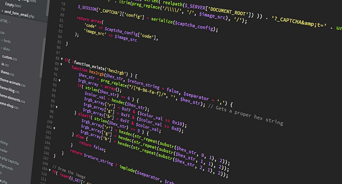

| Az objektum-orientált programozás alapelvei. A Java programozási nyelv története alapvető sajátosságai, a Java platform. A nyelv alapelemei. Operátorok, tömbök, típusok. Vezérlési szerkezetek. Osztály és objektum, példányosítás. Hozzáférési kategóriák. Konstruktorok, inicializáló blokkok, destruktor jellegű metódusok. Öröklődés, polimorfizmus. Alapvető osztályok. Kivételkezelés. Interface. Alapvető csomagok és névterek. Osztálytervezési szempontok, alkalmazási példák. |  |

| Objektum Orientált Programozás | Adatbázis rendszerek | Mikroökonómia |